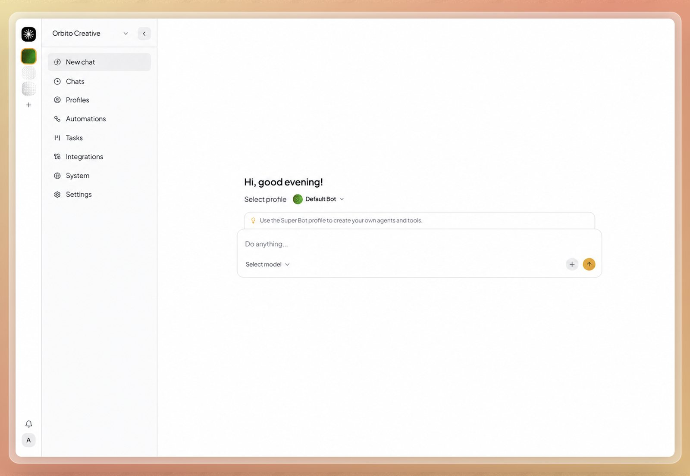
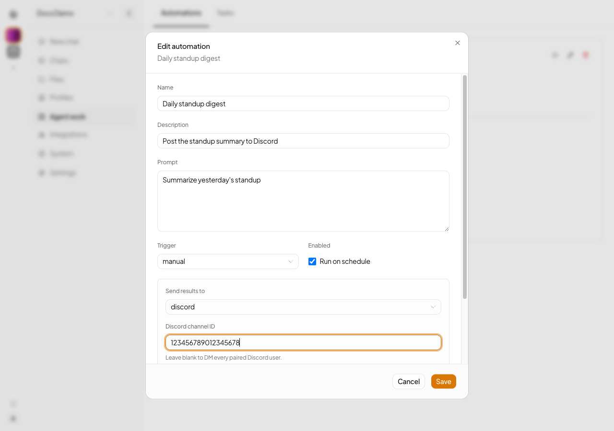

Team leads
Operations, support, founders
Shared agents on the web, Telegram, and WhatsApp, not a dozen personal ChatGPT accounts. One memory the whole team builds on.
Open-source AI agent platform for teams
Nakama runs the agents. Your team keeps the important work.
Chat with agents in a dashboard that feels like ChatGPT. Behind it, each agent has its own tools, skills, memory, and channels, with its own identity and permissions.
ops-agent · Orbito Creative
Summarize yesterday's support inbox and draft replies for the refund requests.
24 threads, 19 answered. 3 refund requests need a decision. Replies drafted in your tone.
Your call
Send 3 refund replies?
Agent: the busyworkTeam: the decision
Everyone has their own ChatGPT tab. The team doesn't share agents, memory, or control, so the same context gets pasted in again every day.
Tools like OpenClaw and Hermes Agent are capable, but they run on one machine for one person. Teams and agencies need users, clients, roles, and channels.
One server, many orgs. Invites and roles. Agents isolated from each other. Set it up with managed cloud or one Docker container.
01 · The dashboard
Pick an agent, chat, and check its work. Organizations, profiles, automations, and integrations are one click away in the same sidebar.

02 · How it works
A
Each profile is a set of plain files. The agent keeps context across sessions, and org memory grows over time.
B
Assign tools, skills, and MCP servers per profile. Connect external apps through Composio.
C
The same agent, with the same soul, answers on every channel. Automations deliver results on a schedule.
03 · Capabilities
Schedule agent work on a timer and send results to Telegram, WhatsApp, or Discord. A daily standup digest posts itself; your team reads it over coffee.
Agent work → Automations → Send results to

/add-tool and /add-mcp./docs.04 · Who it's for
Team leads
Shared agents on the web, Telegram, and WhatsApp, not a dozen personal ChatGPT accounts. One memory the whole team builds on.
Agencies & freelancers
Give each client its own organization, with isolated agents, memory, and channels. One installation serves every client workspace.
Use Nakama as the agent backend for your customer-facing application.
Coordinate multiple agents, assign tasks, and bring their work together in one workflow.
Update customer records and help your team keep up with follow-ups.
Find ideas and prepare posts for your team's review.
A team of agents that research, draft, and edit with you.
Gather updates and prepare reports on a recurring schedule.
Agents that edit long recordings into videos for Reels and TikTok.
Read and reply to email, change Google Docs and Sheets, and manage events.
05 · Deploy
Self-host it like WordPress, or let Nakama Cloud handle hosting. Either way, a setup wizard asks for your provider and API key on first run.
The least work. No Bun, Docker, or VPS needed.
Prebuilt image, one container.
# Pull and run the latest image
docker pull ghcr.io/ahmadrosid/nakama:latest
docker run -d -p 4310:4310 \
-v nakama-data:/nakama/data \
--name nakama ghcr.io/ahmadrosid/nakama:latestThen open http://localhost:4310. Check the requirements before enabling channel workers.
From source, with Bun.
git clone https://github.com/ahmadrosid/nakama.git
cd nakama
bun install
bun run dev:webThe web dashboard opens at http://localhost:3003 and starts the server if needed.
06 · Compare
Coming from OpenClaw or Hermes Agent? Same class of capability, without the setup maze, and not limited to one operator on one machine.
| Function | ChatGPT / Claude Team | OpenClaw-style tools | Nakama |
|---|---|---|---|
| Shared team agents | Limited | One operator | Yes |
| Multi-tenant orgs | No | No | Yes |
| Channels | Limited | Often available | Web, CLI, Telegram, WhatsApp, Discord, Slack |
| Durable memory | Chat history | One machine | Per org and per profile |
| Deployment | SaaS only | One local system | Docker or Cloud |
07 · Open source
Nakama is built in the open. The architecture, the threat model, and the changelog are all in the repo.